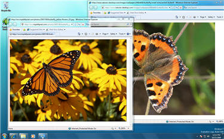
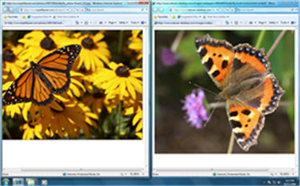

Poate încerci să te decizi dacă vrei sa faci un upgrade de la Windows XP sau Vista, sau poate te gândești să îți cumperi un computer nou și vrei să înveți mai despre Windows 7 prima dată. Cu aceste întrebâri în minte, am explorat Windows 7 și ne-ar plăcea să împărtășim cu voi ce am descoperit.
În această lecție vom compara Windows 7 cu sistemele anterioare de operare, Vista și XP. În plus, vom discuta despre îmbunătășirile din punct de vedere al performanței și vom revizui caracteristicile principale.
Ce este Windows 7?Windows 7 este un sistem de operare pe care compania Microsoft l-a produs pentru utilizarea pe computere personale. Este urmașul sistemului de operare Windows Vista, care a fost lansat în 2006. Un sistem de operare permite computerului tău să administreze software-ul și să realizeze sarcini esențiale.


Cum este Windows 7 diferit de Windows Vista sau XP?Bazându-se pe feedback-ul de la uitlizatori, Microsoft afirmă că a simplificat experiența utilizării PC-ului făcând multe dintre funcții mai simplu de utilizat, precum o previzualizare mai bună în Task Bar, căutarea instantă a fișierelor media, și partajarea simplă prin network-ul HomeGroup. De asemenea declară o performanță îmbunătățită datorită suportului pentru procesare 64-bit, care este din ce in ce mai mult standardul pentru PC-urile desktop. In plus, Windows 7 este proiectat pentru a „adormi” și a se „trezi” mai rapid, a consuma mai puțină memorie și pentru a recunoaște dispozitivele USB mai rapid. Există de asemenea noi posibilități pentru stream-ul media și compatibilitatea touch-screen.
Cele de sus sunt îmbunătățiri atât pentru utilizatorii de Windows XP cât și pentru utilizatorii de Windows Vista. Dacă ești deja un utlizator de Vista, îmbunătășirile aduse către Windows 7 sunt mai subtile. Utilizatorii Vista probabil sunt deja familiari cu trăsături precum functiile vizuale Aero, organizarea Meniului de Start și Căutarea. Totuși, dacă folosești Windows XP în prezent, este posibil să ai nevoie de o perioadă de ajustare.
Îmbunătățiri pentru utilizatorii Vista și XP